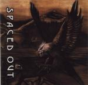

| Artist: | Spaced Out |
| Title: | Spaced Out |
| Label: | Unicorn Records UNCR-5001 |
| Length(s): | 54 minutes |
| Year(s) of release: | 2000 |
| Month of review: | [01/2001] |
| 1) | Green Teeth | 4.51 |
| 2) | Toxix | 4.50 |
| 3) | A Freak Az | 5.43 |
| 4) | Magnetyzme | 5.10 |
| 5) | Delirium Tremens | 5.10 |
| 6) | The Fifth Dimension | 6.39 |
| 7) | Pensestuaux | 5.57 |
| 8) | Futurosphere | 3.58 |
| 9) | Furax | 6.37 |
| 10) | Glassosphere | 5.51 |